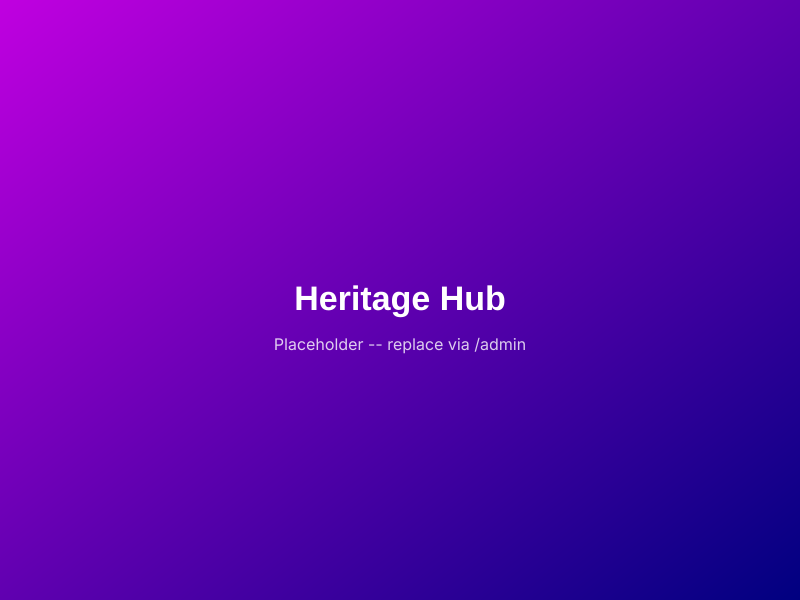

Co-Director & Executive Lead
Christina Ama Aframoah, BA (Hons)
National Outstanding Early Childhood Practitioner of the Year, 2025Accolades & Academic Credentials
Christina Ama Aframoah is a First-Class Honours graduate in Early Childhood Studies from the University of Northampton, and was named National Outstanding Early Childhood Practitioner of the Year in 2025, recognition of practice-level excellence that now shapes Safe Space's entire early years approach.
Pedagogical Architecture
She is the architect of Safe Space's proprietary, trauma-informed SOS Framework, the Support, Observe, Succeed model that underpins the organisation's approach to psychological safety, retention, and workforce readiness across every program.
Administrative & Fiscal Governance
Alongside her clinical and pedagogical work, Christina holds an HND in Accounting and brings high-level HR System Improvement expertise to the organisation, ensuring corporate precision, clear accounting metrics, and fiscal integrity across all of Safe Space's operations.
First-Class Honours, University of Northampton.
Awarded 2025.
Underpins fiscal governance and accounting metrics across Safe Space.
High-level experience improving organisational HR systems and processes.